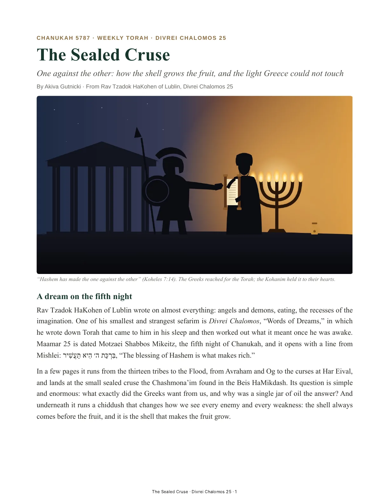
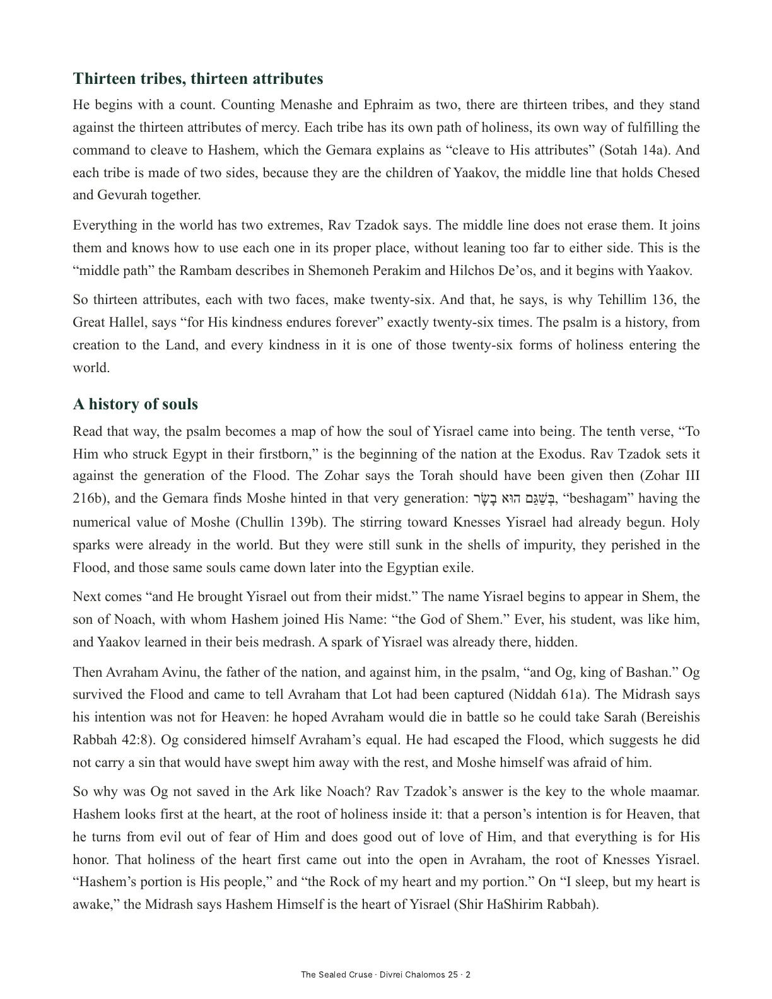
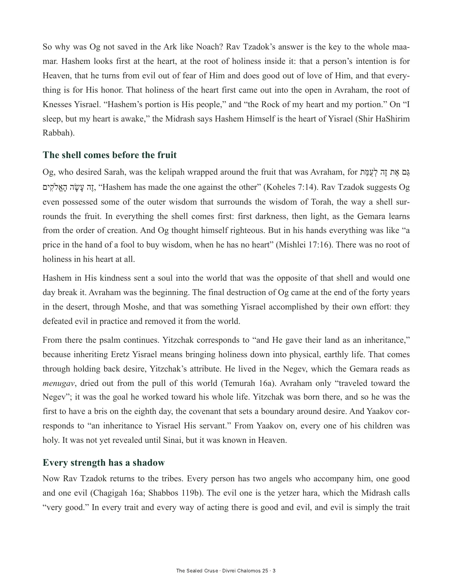
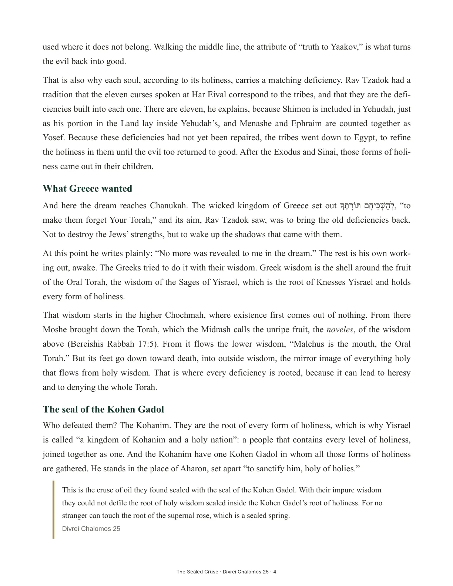
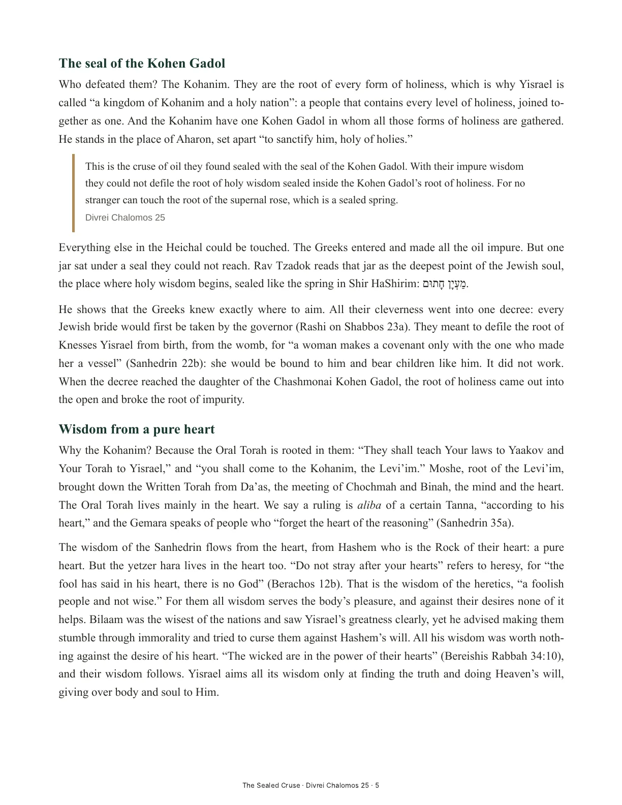
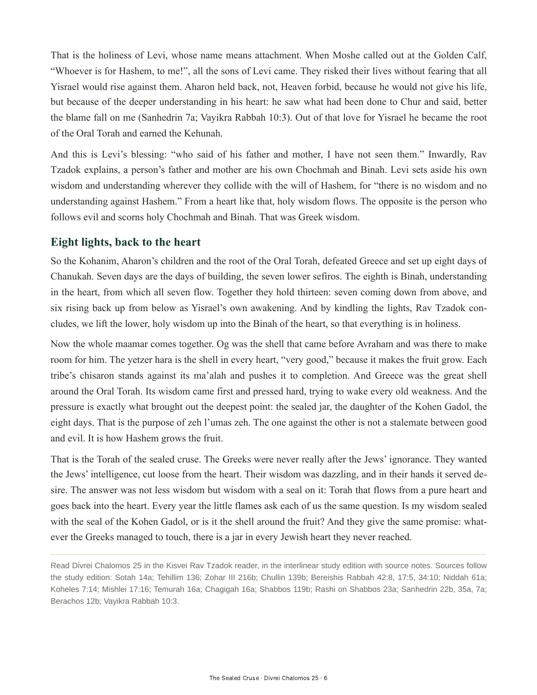
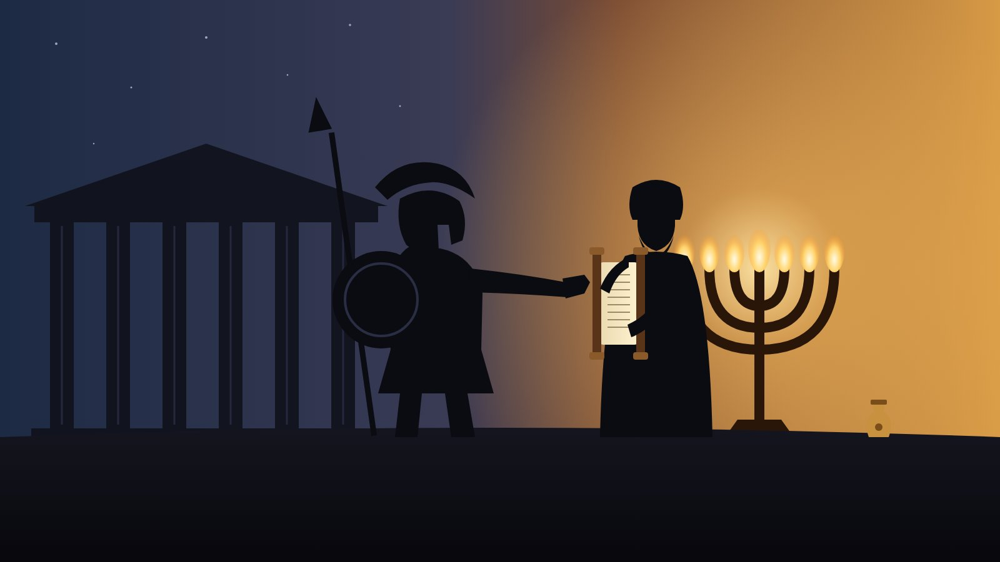

One against the other: Greek wisdom, the heart of Yisrael, and the light that could not be touched

Shown page by page from the PDF. For text you can select, search or have read aloud, open the PDF or download the Word file.






Divrei Chalomos 25, “Zeh Le’umas Zeh and Chanukah,” in Hebrew–English interlinear with source notes in the reader.